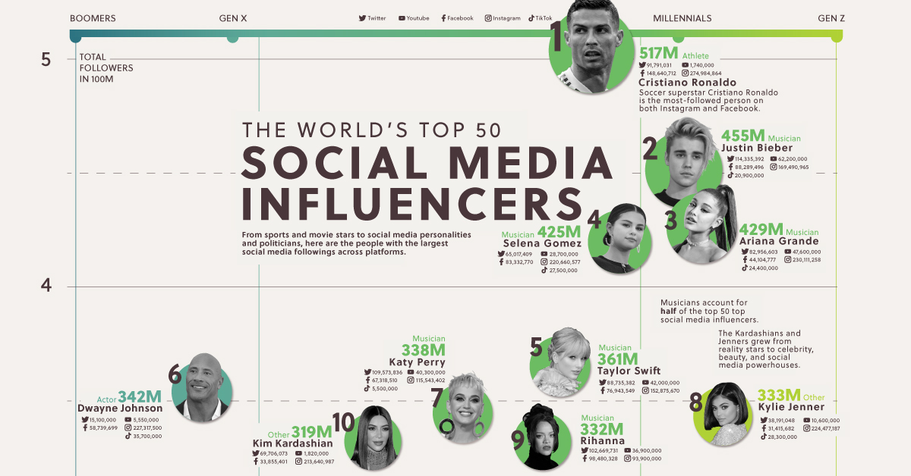

Understanding how TikTok, Instagram, and YouTube measure growth
Social media analytics helps creators and businesses understand whether their content is actually working. Instead of only guessing, analytics can show what posts are getting views, what content gets engagement, and what platforms are helping a creator or brand grow.
TikTok, Instagram, and YouTube all give creators data, but each platform uses that data differently. A strong creator or business has to understand views, watch time, engagement, followers, and revenue.

A dashboard helps people see patterns quickly. Instead of looking at one post at a time, analytics helps creators understand the bigger picture.
This video explains how TikTok's algorithm works and how creators can use content strategy, watch time, and engagement to improve growth.
This embedded Tableau dashboard shows social media trend analysis, including how follower counts change over time. This connects directly to how social media trends can help platforms, creators, and brands grow their audience.